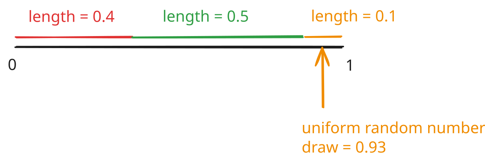

IN PROGRESS
In the last entry, we covered the basic formalism of a Markov Decision Process (MDP). We looked at state and action spaces, rewards, trajectories and policies.
In this write-up, we’ll look at two crucial quantities. Suppose, we are given the following:
An environment i.e. a state space \(\mathcal{S}\), an action space \(\mathcal{A}\) and a simulator (or real-life setup) that can execute the unknown (to us) transition function \(p(s' | s, a)\).
A reward function \(r(s,a)\) which can be used to compute trajectory level rewards \(R(\tau) = r(s_0, a_0) + \gamma r(s_1, a_1) + \gamma^2 r(s_2, a_2) + \ldots\) where \(\gamma\) is the discount factor (in \((0,1)\)).
A policy \(\pi(a | s)\) that takes a state as an input and maps to an action. The policy can be determinstic (map state to one action) or stochastic (for a given state, produce a probability for picking each action).
The central task in RL is to pick a good policy. Recall that a policy is a rule that maps states to actions i.e. \(s \mapsto a\) (determinstic policy) or states to probabilities over actions \(s \mapsto (p(a_1), p(a_2), \ldots, p(a_N))\) if there are N distinct actions. In short, policies tell an actor (also known as the agent) how to act or what decisions to make. Intuitively, a “good” policy will lead to trajectories \(\tau = s_0 \rightarrow a_0 \rightarrow s_1 \rightarrow a_1 \rightarrow \ldots\) that have “high” rewards, \(R(\tau) = \Sigma_{i=0}^{T} \gamma^i r(s_i, a_i)\).
To identify high-reward actions, it’s useful to compute two quantities:
The “quality” score of a state \(s_t\). This quantity assesses if it’s desirable to land up in this state. Formally, this is called the state value function \(v(s)\). For convenience, \(v(s)\) is also referred to as the value function.
The “quality” score of an action in a given state. This quantity assesses how desirable it is to take an action in the given state. Formally, this is called the state-action value function \(Q(s, a)\). For convenience, \(Q(s,a)\) is also called the Q-function or Q-value.
Let’s define the two quantities.
State-action value function \(Q(s,a)\)
Assume we’re given a policy \(\pi\), which lets us generate trajectories.
Suppose, at time t in a trajectory, we land in state \(s_t\) and are forced to take an action \(a_t\). The transition function will take into a state \(s_{t+1}\) according to the probability \(p(s_{t+1}|s_t, a_t)\). We can now use the policy \(\pi\) to generate the next action, land in a new state \(s_{t+2}\) according to the transition function and so on till some stopping criterion is satisfied. At each step, we’ll get a reward and we can define a partial-trajectory reward known as reward to-go:
\[G_t = r(s_t, a_t) + \gamma r(s_{t+1}, a_{t+1}) + \gamma^2 r(s_{t+2}, a_{t+2}) + \ldots = \Sigma_{t'=t}^{T} \gamma^{t'-t} r(s_{t'}, a_{t'})\]
It might be helpful to set \(\gamma=1\) to see that \(G_t\) is simply the some of future rewards (“to-go”) starting from time \(t\). The notation \(G_t\) is used to be consistent with Sutton and Barto’s book in case you use it although they start the sum at \(t+1\) (different definition).
To summarize, given a state \(s_t\) at time \(t\) and a forced action \(a_t\) at time t, we can rollout the trajectory with policy \(\pi\) and compute a number \(G_t\) that’s the reward to-go.
If we were to repeat this experiment, we would get a different trajectory after time \(t\). This is because:
The policy might be stochastic and not determinstic i.e. \(\pi(s)\) gives a distribution over actions (\(a_1\) with probability 40%, \(a_2\) with probability 60%) and repeated runs will choose different actions (see aside on sampling below).
The transition function might be stochastic and not determinstic i.e. even if one takes the same action in the same state, \(p(s' | s, a)\) defines a probability distribution over \(s'\) and we’ll end up in different states in repeated runs.
Aside on sampling:
Suppose, we have three possible actions:
\(a_1\) with probability 0.4
\(a_2\) with probability 0.5
\(a_3\) with probability 0.1
We could just choose \(a_2\) since it has the highest probability. Another option is to sample i.e. pick different actions according to their probabilities, as shown i figure 1 below.

Since all the probabilities have to add up to 1, put them consecutively on the \([0,1]\) interval. Sample a uniform random number and place it on the interval. In the figure, \(0.93\) is drawn and placed. It lands in the interval “owned” by \(a_3\) and so we would pick \(a_3\). In general the probability of a random number landing in one of the intervals is proportional to the length of the interval.
End of Aside
For each sub-trajectory starting at \(s_t\) with action \(a_t\), we have one reward to-go value, \(G_t\). We can now define the “quality” of (\(s_t\), \(a_t\)) as the average (over all trajectories generated beyond time \(t\)) \(G_t\).
\[Q(s_t, a_t) = \frac{1}{\text{number of trajectories}} \Sigma_{i=1}^{\text{num traj}} G_t^{(i)}\]
This is written more formally as:
\[Q(s_t, a_t) = \mathbb{E}_{s\sim p(.|s,a),a\sim \pi(s)}[G_t | s_t, a_t]\]
We’ll unpack this shortly. Intuitively, you should think of \(Q(s_t,a_t)\) as the “average discounted cumulative reward (reward to-go) if one is forced to take action \(a_t\) in state \(s_t\) and then take future actions according to the policy \(\pi\)”. The part of using the policy \(\pi\) to take future actions is crucial and is made explicit by writing \(Q^{\pi}(s_t,a_t)\).
Let’s now unpack:
\[Q^{\pi}(s_t, a_t) = \mathbb{E}_{s\sim p(.|s,a),a\sim \pi(s)}[G_t | s_t, a_t]\]
The first important piece is \(\mathbb{E}\). This is called the expected value. More precisely, in probability theory, one works with objects called random variables. You can think of a random variable as a quantity take can take multiple values, each with a specific probability. The simplest example or a random variable is a coin toss i.e.
\[X = \begin{cases} 0 & \text{if heads with probability $p$}\\ 1 & \text{if tails with probability $1-p$} \end{cases} \]
The expected value of X i.e. \(\mathbb{E}X\) is the average outcome i.e.
\[\mathbb{E} = 0.p + 1.(1-p) = 1-p\]
This might look mysterious so let’s look at an illustrative example. Suppose you are given the following data for test scores for 10 students:
\[3,3,3,3,5,5,7,9,9,9\]
The average score would be:
\[\frac{3+3+3+3+5+5+7+9+9+9}{10} = \frac{3*4 + 5*2 + 7*1 + 9*3}{10} = 3*\frac{4}{10} + 5*\frac{2}{10} + 7*\frac{1}{10} + 9*\frac{3}{10}\]
The ratios are precisely the probabilities of picking students with certain scores i.e. the % of students with each unique score:
\[3*p(3) + 5*p(5) + 7*p(7) + 9*p(9)\]
In other words, the average is the “sum of each unique value multiplied by the probability of observing the value”. Mathematically, we could write:
\[\mathbb{E}X = \Sigma_{x} x * p(x)\]
where the sum \(\Sigma_{x}\) is over all unique values \(X\) can take. Often the probability distribution is made explicit by writing \(\mathbb{E}_{x \sim p(x)}X\).
Going back to \(Q^{\pi}\):
\[Q^{\pi}(s_t, a_t) = \mathbb{E}_{s\sim p(.|s,a),a\sim \pi(s)}[G_t | s_t, a_t]\]
We see that the random variable is \(G_t = \Sigma_{t'=t}^{T} \gamma^{t'-t} r(s_t,a_t)\). The \(| s_t, a_t\) part signifies that we have a known fixed state and known fixed action at time \(t\). Lastly, \(\mathbb{E}_{s\sim p(.|s,a),a\sim \pi(s)}\) specifies that actions \(s\) are sampled from the transition function \(p(s'|s,a)\) and actions are sampled from the policy \(\pi(s|a)\).
Theoretically, you could think of computing \(Q^{\pi}(s_t,a_t)\) as follows:
Generate every possible trajectory start at time \(t=0\) by taking actions from policy \(\pi\) and letting states evolve according to the transition function \(p(s'|s,a)\).
Select the subset of trajectories that hit state \(s_t\) at time \(t\) and where the action taken is \(a_t\) at time \(t\).
For the subset of trajectories, compute the discounted reward to-go \(G_t\) for every trajectory.
Average these reward to-go values to get \(Q^{\pi}(s_t,a_t)\).
This is computationally intractable. For example, if we have \(S\) distinct states and \(A\) distinct actions, and each trajectory has \(T\) time-steps, we have a total of \((S*A)^T\) trajectories. Even for small values of \(S, A, T\) e.g. \(S=10, A=10, T=10\), this is \(100^{10} = 10^{20}\) i.e. 100 billion billion. If it takes one second to do one rollout, it would take \(\sim 10^{12}\) years to generate every trajectory sequentially. This is a trillion years (the universe is about 14 billion years old).
We now understand how to evaluate the quality of a state-action pair using \(Q^{\pi}\). Mathematically (and programmatically), \(Q^{\pi}\) is a function that maps a state-action pair to a number.